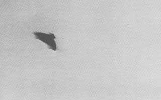

A Lezay, Deux-Sèvres, 2 gendarmes observent un ovni de près,
ainsi que d'autres témoins au moment de son décollage "L'ovni atterrit sous les yeux de 2 gendarmes", Le Télégramme, 5 mai 1975.
Photographie prise à Chiba (Japon) le 11

À Chiba (Japon), photographie (ci-contre).
(ou , ou /) A Concarneau
(Finistère), un témoin observe, depuis son appartement situé au 5eme étage, 3 points lumineux fixes à une
altitude estimée à entre 200 à 300 m. Après plusieurs minutes et sans bruit, ces points lumineux se rapprochent de
la côte puis s'éloignent vers le sud Témoignage du 14 mai 2008 < GEPAN : PAN classé C.